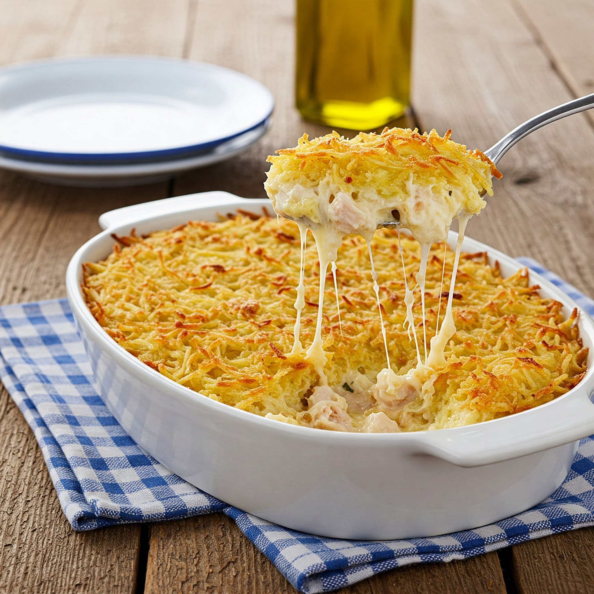
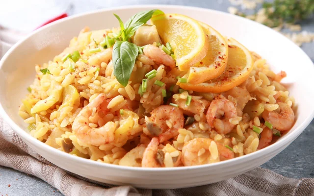
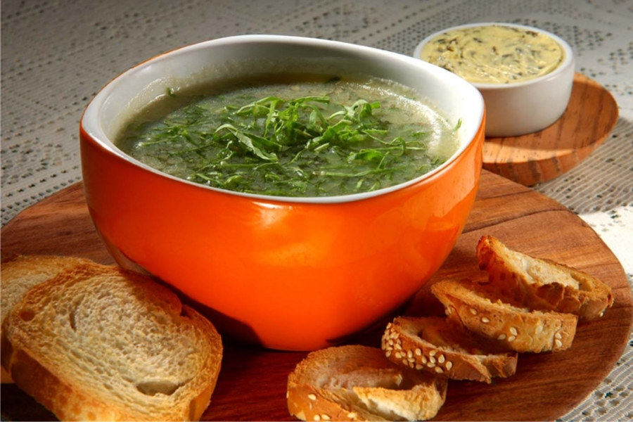

Jantar
O jantar é o momento de relaxar e desfrutar de uma refeição saborosa após um dia agitado. Aqui você encontrará uma seleção de receitas deliciosas e reconfortantes para tornar seu jantar especial. Explore as opções e descubra novas ideias para suas refeições noturnas.

Fricassê de Frango
Um clássico que combina a suavidade do milho com a textura do frango desfiado, finalizado com aquela camada crocante de batata palha.
- Ingredientes: Peito de frango desfiado, milho verde, requeijão cremoso, creme de leite, muçarela e batata palha.
- Preparo: Bata o milho com o creme de leite e o requeijão no liquidificador. Misture com o frango refogado e coloque em um refratário. Cubra com queijo e leve ao forno para gratinar. Finalize com a batata palha antes de servir.

Risoto de Camarão com Limão Siciliano
Para quem busca um jantar mais sofisticado e aromático. O frescor do limão siciliano equilibra perfeitamente a textura rica do risoto.
- Ingredientes: Arroz arbóreo, camarões limpos, vinho branco seco, caldo de legumes, manteiga, parmesão e raspas de limão siciliano.
- Preparo: Refogue o arroz e adicione o caldo aos poucos, mexendo sempre. No meio do processo, junte os camarões grelhados e o suco do limão. Finalize com manteiga gelada e as raspas de limão para perfumar.

Caldo Verde com Torradas
A opção ideal para encerrar o dia de forma leve e quentinha. Um prato tradicional que traz o sabor rústico da couve com o toque defumado da linguiça.
- Ingredientes: Batatas cozidas e batidas, couve fatiada bem fininha, rodelas de paio ou calabresa e pão francês para as torradas.
- Preparo: Cozinhe e bata as batatas até virar um creme. Refogue a linguiça e junte ao creme. Por último, adicione a couve e deixe cozinhar por apenas dois minutos. Sirva com torradas passadas no azeite e alho.